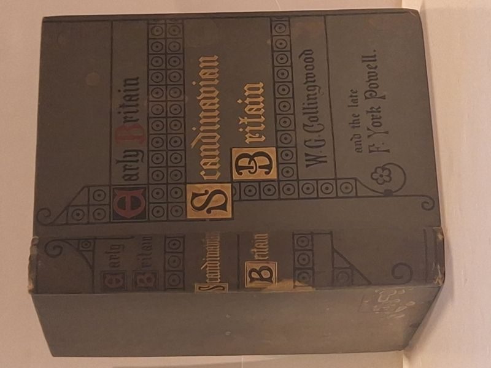

Early Britain: Scandinavian Britain
W. G. Collingwood, M.A., F.S.A., with Chapters Introductory to the Subject by the late F. York Powell, M.A. · Society for Promoting Christian Knowledge, London, 1908

C$30 · Very Good condition
Society for Promoting Christian Knowledge, London, 1908. First and only edition of W. G. Collingwood's authoritative study of the Norse and Danish settlement of Britain, with introductory chapters by the late F. York Powell, sometime Regius Professor of History at the University of Oxford. Part of the SPCK 'Early Britain' series. Hardcover, decorative grey cloth boards in the original red-black-and-gold ornamental binding designed for the series, depicting the title within a roundel-and-floret border evocative of Norse stonework. Folding colour map of the Scottish and northern English coastline tipped in at the front. Collingwood (1854-1932) was Professor of Fine Art at University College, Reading, editor to the Cumberland and Westmorland Antiquarian and Archaeological Society, and the canonical antiquarian of Norse Britain - he coined the term 'Anglo-Norse' for the cultural blend that emerged from the Danelaw settlements. The 1908 first edition is scarce on the market - no other original copies currently listed on AbeBooks worldwide at time of listing. Of interest to Viking-studies collectors, Norse-Britain antiquarians, and SPCK Early Britain series completists.
Details
- Publisher: Society for Promoting Christian Knowledge, London, 1908
- Binding: Hardcover
- Edition: First Edition
- Condition: Very Good
- Category: History